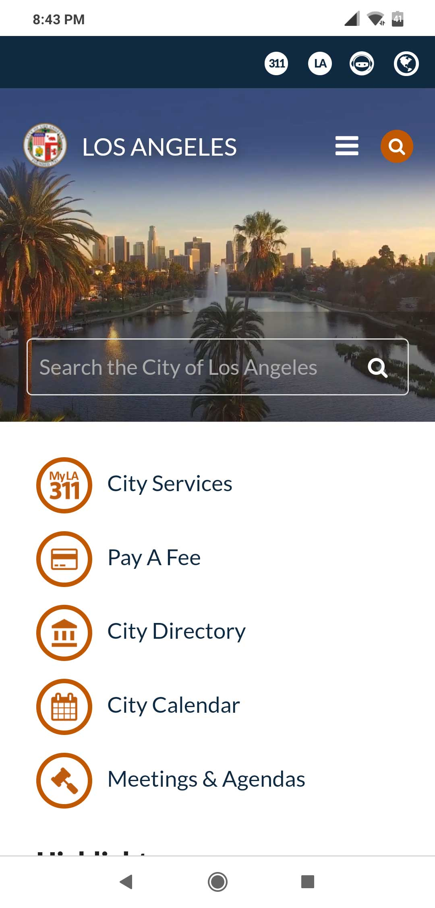
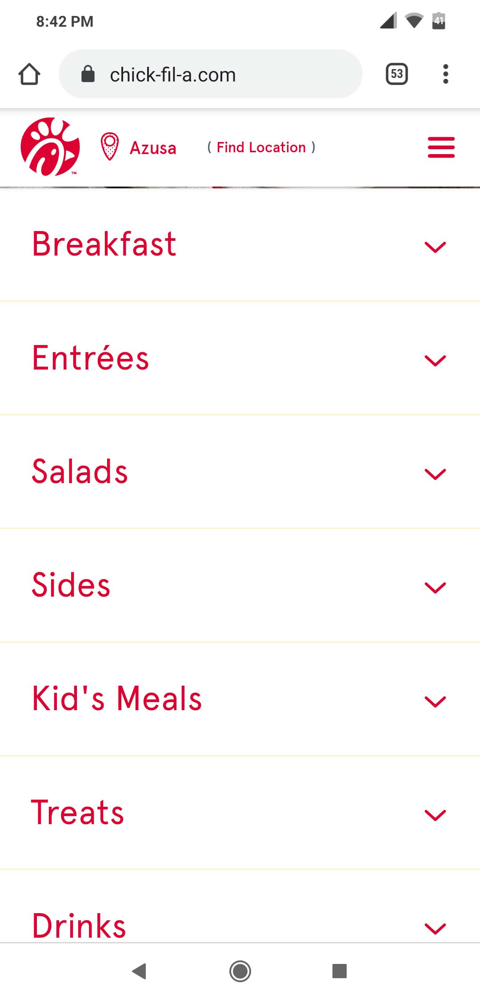
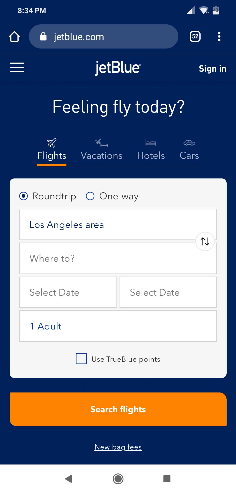

Repetition
City of Los Angeles
lacity.org
I think this site is a good example of repition with the repeated circular thumbnail images next to the headings. It is first seen at the top with title and is then repeated down below in the menu. There is also the repeated use of the color orange throughout being used with the circular thumbnails and the search bar icon.
Alignment
Chick-Fil-A
chick-fil-a.com
I think the Chick-Fil-A site is a good example of alignment. It shows a strong left alignment of the menu option. It is well organized and is clearly defined. The site is easy to navigate and find what you are looking for.
Contrast
JetBlue
jetblue.com
I think the JetBlue website is a good example of contrast. First, there is a good contrast between the colors used, blue and white. The white against the blue clearly shows what is important and what is to be viewed first, like the flight search area. Along with the blue and white, there is also the contrast of the orange. While blue and white are complimentary colors, their contrast also helps make the site interesting to view.